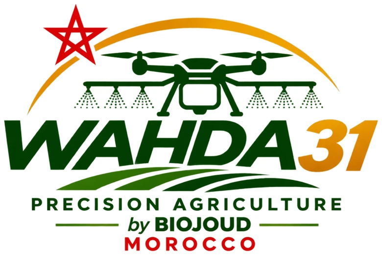

BIOJOUD · حلول لمحاصيلك
قوة الطبيعة.
دقة العلم.
في حقلك.
من التربة الحية إلى محاصيل تجد ما تحتاجه. اكتشف حلول BIOJOUD عند تقاطع الطبيعة والتكنولوجيا الحيوية.
BIOJOUD / قناعتنا
كل شيء يبدأ
بتربة حية.
التربة والجذور والأوراق والأزهار والثمار: لكل مرحلة حاجتها. تجمع BIOJOUD تركيبات عضوية ومعدنية ونباتية وميكروبية لمواكبة العمل في الحقل.
خدمة فلاحية · WAHDA31
كراء الدرون الفلاحي
تقدم BIOJOUD خدمة كراء الدرون الفلاحي WAHDA31. تواصل معنا عبر واتساب للاستفسار عن التوفر والأسعار وشروط الكراء.
استفسر عبر واتساب
مجموعة واحدة. حلول متعددة.
من الجذور
إلى الحصاد.
حلول سائلة وصلبة، مكونات واضحة ووثائق في المتناول. اعثر على الحل المناسب لاحتياجك.
شاهد المجموعة كاملة


حلول BIOJOUD
المنتج المناسب.
للاحتياج المناسب.
استكشف تركيباتنا الـ23. كل صفحة تعرض التركيبة وطريقة الاستعمال والملصق الأصلي للمنتج.


لا نتائج. جرب كلمة أو عائلة منتجات أخرى.
شركة BIOJOUD
BIOJOUD.
من الطبيعة إلى الحقل.
تقدم BIOJOUD، انطلاقاً من الدار البيضاء، حلولاً فلاحية تجمع بين التغذية والمادة العضوية والتكنولوجيا الحيوية. مجموعتنا موجهة للفلاحين والموزعين والشركاء الراغبين في معرفة التركيبات واستعمالاتها.
مكونات محددة
طحالب بحرية وأحماض هيومية ومستخلصات نباتية وعناصر معدنية وكائنات دقيقة: لمعرفة ما نقدمه للتربة والنبات.
استعمالات موثقة
تركيبة كل منتج وجرعاته واحتياطاته موجودة في صفحته ووثائقه الأصلية.
تواصل حسب احتياجك
قدم نوع محصولك ومساحته وهدفك لطلب معلومات تقنية أو عرض سعر.
دليل BIOJOUD
من أين تبدأ؟
اختر هدفك واكتشف مجموعة أولى من المنتجات ومعلوماتها التفصيلية.
حلول حسب الاحتياج
محصولك يتطور.
وحلوله كذلك.
تربة خصبة
بنية التربة والمادة العضوية والحياة الميكروبية.
HUMIC PRO · BIOCHAR · VERMICOMPOST↗02 /جذور نشطة
التجذير واستعادة النمو وحيوية المحاصيل.
ROOTVITAL · ATLASIA · MICROBOOST↗03 /تغذية موجهة
عناصر غذائية حسب احتياجات النبات.
MAGVITAL · ARX BIO-CaB · K-90↗04 /تطبيق دقيق
حماية الأوراق والتبليل والتغطية.
K-FLEX · VEXTA · KAOLINOVA↗لكل مشروع تواصله
علامة واحدة.
وطرق متعددة للتقدم.
أرضك. هدفك.
حدد احتياج التربة أو المحصول، وقارن التركيبات والجرعات وطرق التطبيق قبل تجهيز طلبك.
- نوع المحصول ومرحلة نموه
- المساحة وطريقة الري
- الاحتياج الذي لاحظته والحل المطلوب
اكتشف المجموعة لنشاطك.
توزع منتجات فلاحية؟ قدم شركتك ومنطقة نشاطك وعائلات المنتجات التي تهمك للتواصل مع BIOJOUD.
- شركتك ومنطقة نشاطك
- المنتجات وأحجام العبوات المطلوبة
- الكميات والوثائق التي تحتاجها
لنوضح مشروعك.
عندك مشروع فلاحي أو اقتراح تعاون؟ قدم نشاطك وهدفك والمنتجات المعنية. يمكنك التواصل مع BIOJOUD بالدار البيضاء عبر البريد الإلكتروني.
- نشاطك ومؤسستك
- نطاق المشروع وهدفه
- المعلومات التقنية المطلوبة
مركز الوثائق
المعلومات الصحيحة.
في متناولك.
اطلع على وثائق BIOJOUD الأصلية، المرجع للتركيبة والجرعات وشروط الاستعمال.
كيف أختار منتج BIOJOUD؟+
ابدأ باحتياجك: خصوبة التربة، تغذية النبات، التحفيز الحيوي، الحماية أو التطبيق. راجع التركيبة والاستعمالات ثم أرسل لنا نوع المحصول والمساحة والهدف.
أين أجد الجرعات والاحتياطات؟+
لكل منتج صفحة تفصيلية وملف PDF أصلي. الجرعات مأخوذة من وثيقة المنتج وتكيف حسب المحصول وظروف الاستعمال.
ما أحجام العبوات المتوفرة؟+
تعرض الوثائق عبوات سائلة 1 و20 لتراً، وHYBRID CARBON بحجم 20 و200 لتر، وKAOLINOVA بوزن 10 كغ، وثلاثة محسنات تربة في أكياس 50 كغ. يرجى تأكيد التوفر مع BIOJOUD.
كيف أطلب عرض سعر أو شراكة؟+
اختر المنتج واستعمل النموذج مع ذكر موقعك والكمية والنشاط. يجهز الطلب في تطبيق البريد قبل إرساله إلى BIOJOUD.
لنبن الخطوة القادمة
لنتحدث عن
محاصيلك.
سؤال تقني أو طلب عرض سعر أو مشروع توزيع؟ أخبرنا باحتياجك.
biojoudmaroc@gmail.com 12, Rue Saria Ben ZounaimÉtage 3, Appartement 3, Palmier
Casablanca 20000, Maroc